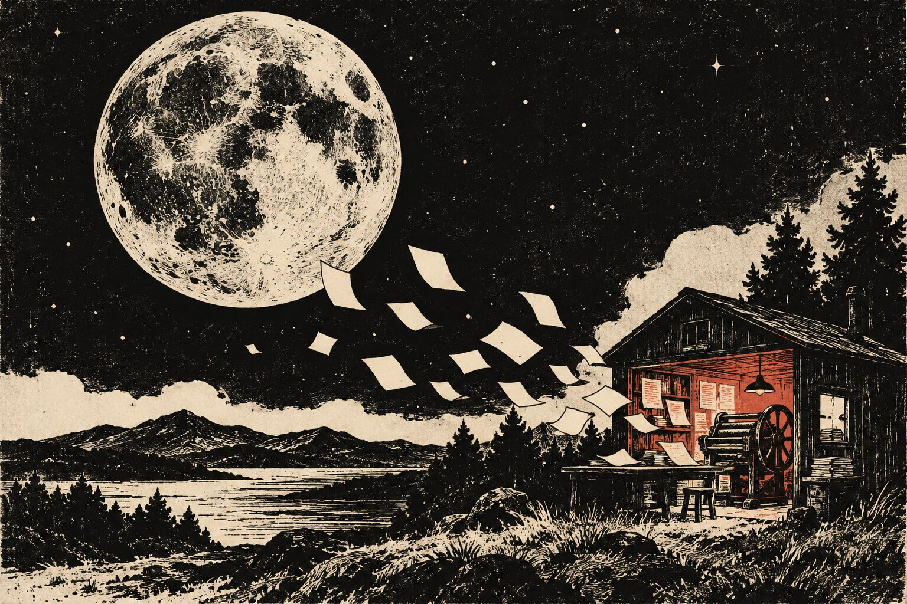

02 / 書く場所は、手元に。
文章と道具の、近い関係。
Markdownを直接書いても、ローカルの管理画面から記事を編集しても。下書きをプレビューし、画像を添えて、自分のペースで仕上げられます。
元の文章は手元のファイルに。編集画面は自分のPCで起動します。
最初の記事をつくる →A SMALL TOOL FOR PUBLISHING · 開発中のプレビュー版
日記も、制作の記録も、長く残したい文章も。 MoonPressは、手元のMarkdownから自分のウェブサイトをつくる、小さな出版の道具です。
HTMLとCSS、そして画像。できあがったサイトは、そのまま好きな場所へ持っていけます。

02 / 書く場所は、手元に。
Markdownを直接書いても、ローカルの管理画面から記事を編集しても。下書きをプレビューし、画像を添えて、自分のペースで仕上げられます。
元の文章は手元のファイルに。編集画面は自分のPCで起動します。
最初の記事をつくる →03 / ページは、どこへでも。
変更するページを確認してからビルド。生成したHTML・CSS・画像は、GitHub Pagesなどの静的ホスティングへ公開できます。
読む人にJavaScriptの実行環境は不要です。このサイトも、MoonPressで生成しています。
公開の手順を読む →